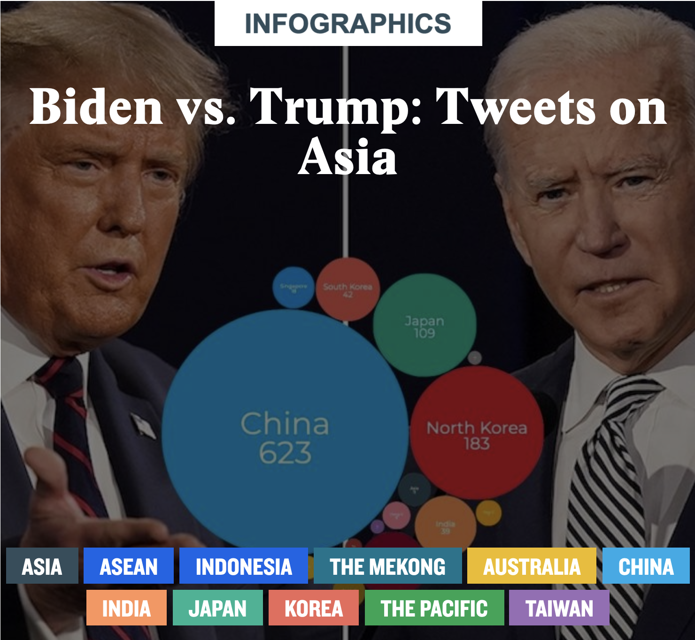

Developed for think tank the East-West Center, Biden vs. Trump: Tweets on Asia provides visual tools for understanding the two candidates'
Tweets on Asian nations during the 2020 U.S. presidental election. Users can filter tweets by candidate and
country, read the text of each Tweet and compare how often the candidates Tweeted on a range of key
issues affecting Asian countries' ties with the U.S.
Visit the website.
